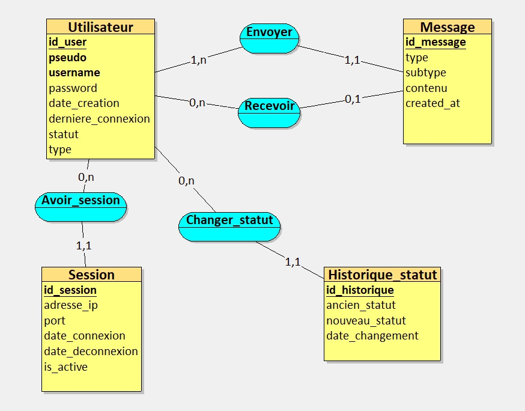
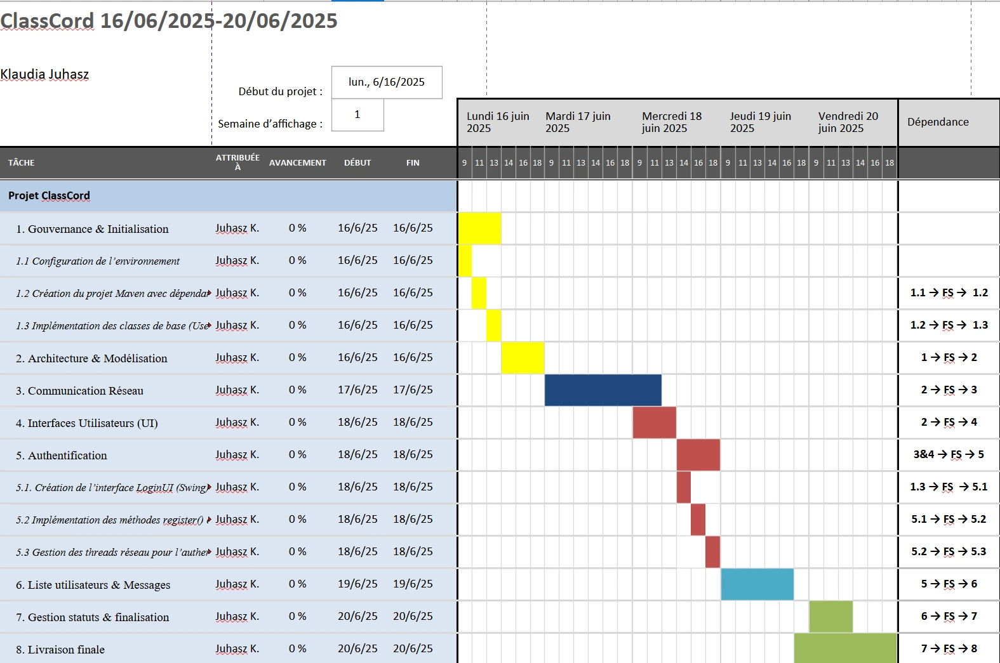

ClassCord Client
Application de Chat en Java
Dans le cadre de la semaine intensive SLAM du BTS SIO, j'ai développé ClassCord
Client, une application de messagerie instantanée en Java destinée à fonctionner
en réseau local.
Ce projet m'a permis de mobiliser mes compétences en programmation
orientée objet, communication réseau via sockets TCP, gestion de dépendances avec Maven,
et conception d'interfaces graphiques avec Swing.
L'objectif était de concevoir un client capable de se connecter à un serveur de tchat
(géré par les étudiants SISR), d'échanger des messages en temps réel, et d'offrir une
interface fluide, réactive et sécurisée.
Le projet a été mené en autonomie, avec un
accompagnement pédagogique, et documenté étape par étape.
-
Envoi et réception des messages globaux et privés

-
Gestion des status utilisateurs

-
Interface Swing ergonomique

L'application devait répondre aux besoins suivants :
- ◈ Connexion à un serveur distant via IP et port
- ◈ Choix du mode d'accès : invité ou authentifié (login/mot de passe)
- ◈ Communication en temps réel avec les autres utilisateurs
- ◈ Envoi des messages globaux visibles par tous ou des messages privés à un utilisateur ciblé
- ◈ Affichage dynamique de la liste des utilisateurs connectés avec leur statut (en ligne, absent, invisible)
- ◈ Mise à jour en temps réel des statuts et des utilisateurs
- ◈ Interface fluide et intuitive avec gestion des erreurs
- ◈ Langage : Java 11+ Utilisé pour développer l'ensemble de l'application grâce à sa robustesse, sa portabilité et sa prise en charge de la programmation orientée objet.
- ◈ IDE : Visual Studio Code et IntelliJ IDEA Visual Studio Code a été utilisé pour une configuration rapide et légère, tandis qu'IntelliJ IDEA a facilité le débogage, la navigation dans le code et la gestion avancée du projet.
- ◈ Gestionnaire de dépendances : Maven Employé pour automatiser la gestion des bibliothèques externes, structurer le projet et simplifier le processus de compilation.
- ◈ Bibliothèque externe : org.json Intégrée pour créer, envoyer et lire les messages au format JSON entre le client et le serveur via les sockets TCP.
- ◈ Interface graphique : Java Swing Utilisée pour concevoir une interface utilisateur interactive, fluide et personnalisée, avec des composants comme les zones de texte, boutons et listes.
- ◈ Architecture : Modèle MVC Adoptée pour séparer clairement la logique métier, l'interface utilisateur et le contrôle des interactions, ce qui améliore la lisibilité et la maintenabilité du code.
- ◈ Gestion de version : Git/GitHub Git a permis de suivre l'évolution du projet avec des commits réguliers, et GitHub a servi de plateforme de partage et de documentation du code.


Le développement s'est déroulé sur cinq journées intensives :
- Jour 1 : Initialisation du projet Maven, création des classes User et Message, structuration en packages MVC.
- Jour 2 : Connexion au serveur via socket TCP, envoi/réception de messages en mode invité, affichage console et Swing.
- Jour 3 : Authentification complète (inscription + connexion), gestion des identifiants, navigation fluide entre interfaces.
- Jour 4 : Ajout des messages privés, affichage dynamique de la liste des utilisateurs connectés, différenciation visuelle des messages.
- Jour 5 : Gestion des statuts (disponible, absent, invisible), amélioration graphique, tests croisés, finalisation du projet.
- Jour EXTRA : Réorganisation complète du code selon le modèle MVC (controllers, models, UI).
Ce projet m'a permis de renforcer mes compétences en Java, en particulier dans la programmation orientée objet et la gestion des communications réseau via sockets TCP. En structurant l'application selon le modèle MVC, j'ai pu améliorer la clarté, la modularité et la maintenabilité du code. La conception d'une interface graphique avec Swing, bien que complexe, m'a offert l'opportunité de créer une expérience utilisateur fluide et intuitive. La gestion des utilisateurs et des messages en temps réel a également été une expérience précieuse, tant sur le plan technique que méthodologique.
J'ai également appris à gérer les échanges réseau en temps réel entre plusieurs clients, tout en assurant une bonne distinction entre les messages globaux et privés. Chaque étape du développement a été soigneusement documentée, que ce soit dans le README, les commentaires du code ou les captures d'écran illustrant les interfaces.
Au final, cette réalisation m'a offert une expérience complète, mêlant conception, développement, tests et documentation. Il reste à tester l'application en conditions réelles, avec plusieurs clients connectés simultanément à un serveur opérationnel, pour valider pleinement sa robustesse et son interopérabilité.
- ◈ Le code source de l'application disponible sur GitHub en cliquant sur ce lien.
- ◈ Une documentation technique détaillée (README_V1.md) disponible sur GitHub.
- ◈ Des commentaires intégrés dans le code pour faciliter la compréhension.
- ◈ Des interfaces Swing illustrées (connexion, chat, login, statuts, choix du mode).
- ◈ Ajouter des notifications sonores et visuelles pour les nouveaux messages.
- ◈ Développer une version JavaFX plus moderne et réactive.
- ◈ Étendre la compatibilité multi-clients pour une utilisation à plus grande échelle.
- ◈ Intégrer une persistance des conversations (historique local ou base de données).
- ◈ Ajouter des rôles utilisateurs (admin, modérateur) pour enrichir les fonctionnalités.
1. Gérer le patrimoine informatique
- 1.1. Recenser et identifier les ressources numériques J'ai identifié et utilisé différentes ressources nécessaires au développement comme Java 11, Maven, les dépendances JSON, les IDE.
4. Travailler en mode projet
- 4.1. Analyser les objectifs et les modalités d'organisation d'un projet L'analyse du cahier des charges m'a permis de comprendre les objectifs et de planifier les différentes étapes du projet en fonction des contraintes définies.
- 4.2. Planifier les activités J'ai organisé le développement en plusieurs phases successives (connexion réseau, authentification, messagerie privée, gestion des statuts) afin de structurer l'avancement du projet.
J'ai choisi une architecture MVC afin d'améliorer la structure et la maintenabilité du code, et j'ai analysé les modalités techniques: Maven, choix des IDE (Visual Studio Code et IntelliJ), format JSON.
5. Mettre à disposition des utilisateurs un service informatique
- 5.1. Réaliser les tests d'intégration et d'acceptation d'un service J'ai testé l'application en conditions réelles en validant la connexion au serveur, l'envoi et la réception de messages ainsi que la gestion des statuts utilisateurs.
6. Organiser son développement professionnel
- 6.1. Mettre en place son environnement d'apprentissage personnel J'ai installé et configuré Java 11, Maven, deux IDE (Visual Studio Code + IntelliJ IDEA) et utilisé Git/GitHub.
- 6.4. Développer son projet professionnel Ce projet m'a permis de découvrir et d'approfondir des domaines clés comme Java, sockets TCP, MVC, UI Swing et de confirmer mon intérêt pour le développement d'applications.